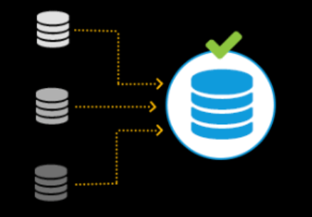
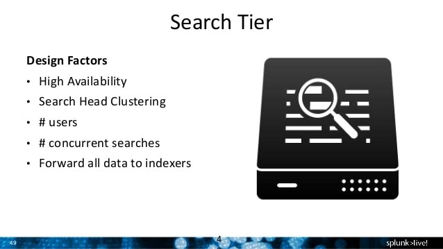
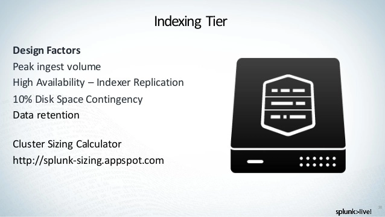
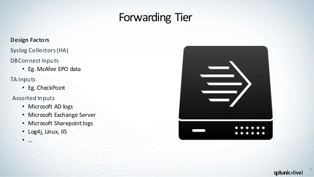

Splunk
What Is Splunk?
Splunk is a software platform to search, analyze and visualize the machine-generated data gathered from the websites, applications, sensors, devices etc. which make up your IT infrastructure and business.
If you have a machine which is generating data continuously and you want to analyze the machine state in real time, then how will you do it? Can you do it with the help of Splunk? Yes! You can. The image below will help you relate to how Splunk collects data.
Real time processing is Splunk’s biggest selling point because, we have seen storage devices get better and better over the years, we have seen processors become more efficient with every ageing day, but not data movement. This technique has not improved and this is the bottleneck in most of the processes within organizations.
If you already think Splunk is an awesome tool, then hear me out when I say that this is just the tip of the iceberg. You can be rest assured that the remainder of this blog post will keep you glued to your seat if you have an intention to provide your business the best solution, be it for system monitoring or for data analysis.
How Does Splunk Work?
Splunk is a software mainly used for searching, monitoring, and examining machine-generated Big Data through a web-style interface. Splunk performs capturing, indexing, and correlating the real-time data in a searchable container from which it can produce graphs, reports, alerts, dashboards, and visualizations.
Splunk Search Head
In a distributed search environment, a Splunk Enterprise instance that handles search management functions, directing search requests to a set of search peers and then merging the results back to the user. A Splunk Enterprise instance can function as both a search head and a search peer.
Splunk Indexer
A Splunk Enterprise instance that indexes data, transforming raw data into events and placing the results into an index. It also searches the indexed data in response to search requests.
Splunk Forwarder
Splunk forwarder is one of the components of Splunk infrastructure. Splunk forwarder acts as an agent for log collection from remote machines. Splunk forwarder collects logs from remote machines and forwards them to the indexer (Splunk database) for further processing and storage.
